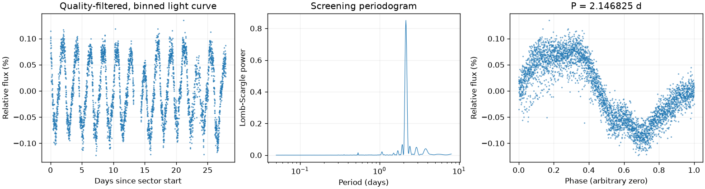
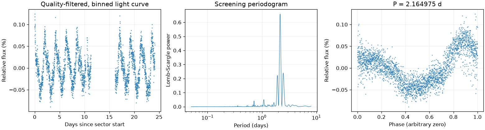
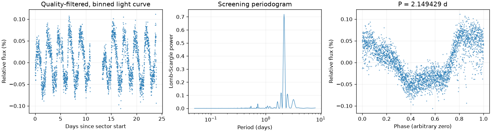
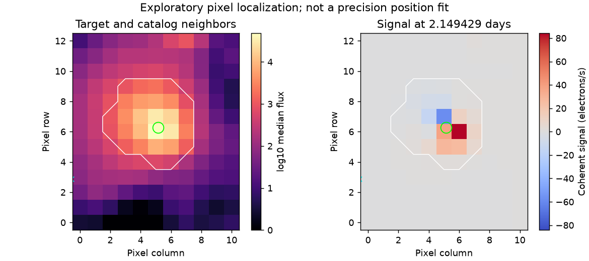

Sector 1 · 2.146825 天
相对幅度估计 0.1537% · 有效点数 18277

Screening peak only; no correlated-noise false-alarm calibration or physical classification.
这是筛选报告，未确认新发现，也不能代替 VSX 提交材料。
图中依次为亮度随时间变化、候选周期强度和折叠后的重复形状。相位零点仅供展示；纵轴是相对通量，不是标定星等。
相对幅度估计 0.1537% · 有效点数 18277

Screening peak only; no correlated-noise false-alarm calibration or physical classification.
相对幅度估计 0.1048% · 有效点数 13654

Screening peak only; no correlated-noise false-alarm calibration or physical classification.
相对幅度估计 0.1068% · 有效点数 15080

Screening peak only; no correlated-noise false-alarm calibration or physical classification.

像素峰值诊断不能替代精细来源拟合或正式查找星图。
{
"ra_deg": 96.2742769549571,
"dec_deg": -55.7252671910084,
"catalog_queries": [
{
"source": "VSX",
"checked_at": "2026-11-10T08:46:00.318266+00:00",
"url": "https://vsx.aavso.org/index.php",
"query": {
"params": {
"view": "api.list",
"ra": 96.2742769549571,
"dec": -55.7252671910084,
"radius": 0.04,
"format": "json"
}
},
"status": "completed",
"match_count": 1,
"note": "VSX neighborhood only; no-match is not novelty confirmation."
},
{
"source": "SIMBAD/VizieR/ADS",
"status": "not_run",
"note": "Requires detailed catalog/literature review; VSX alone is insufficient."
}
],
"vsx_neighbors": [
{
"Name": "ASASSN-V J062519.47-554445.1",
"RA2000": "96.33112",
"Declination2000": "-55.74587",
"VariabilityType": "VAR",
"MaxMag": "15.84 V",
"MinMag": "16.45 V",
"Category": "Variable",
"OID": "843221",
"Constellation": "Pic",
"sep_arcsec": 137.0220673569109
}
],
"notes": [],
"errors": [],
"repeatability": {
"status": "approximately_repeated",
"fractional_spread": 0.00844450454354033,
"tolerance": 0.05,
"note": "Heuristic screening comparison, not period-error or long-term phase-coherence validation."
},
"localization": {
"status": "consistent_with_target",
"target_pixel": [
5.139798710575053,
6.274591859087537
],
"peak_pixel": [
6,
6
],
"target_peak_distance_pixels": 0.902965640213121,
"neighbors": [
{
"name": "ASASSN-V J062519.47-554445.1",
"x": -0.5489919950123854,
"y": 2.8507535670977786,
"distance_from_peak_pixels": 7.266845893913237,
"period_d": null,
"period_harmonic_fractional_error": null
}
],
"possible_contaminant": null,
"limitations": "Heuristic peak/harmonic matching; no PRF fit, localization uncertainty or correlated-noise significance. This is not a submission finding chart.",
"plot": "results/260474813/pixels.png",
"plot_sha256": "2e264c0d9b447fa8afa00ce76f8dbb293dcc57fe31cc41bc01e265f94b74f064",
"pixel_input": {
"uri": "mast:TESS/product/tess2025232030459-s0096-0000000260474813-0293-s_tp.fits",
"sha256": "6f87b8dfd625f9150cf974eb4939d44f9c190fac8f4cdd5e9887942c93216d05"
}
},
"submission": {
"name": null,
"ra_deg": null,
"dec_deg": null,
"coordinate_source": null,
"coordinate_epoch": null,
"variability_type": null,
"period_days": null,
"period_error_days": null,
"epoch": null,
"epoch_time_standard": null,
"epoch_event": null,
"max_magnitude": null,
"min_magnitude": null,
"passband": null,
"magnitude_source": null,
"mean_magnitude": null,
"amplitude_magnitude": null,
"amplitude_passband": null,
"discoverers": null,
"references": null
}
}